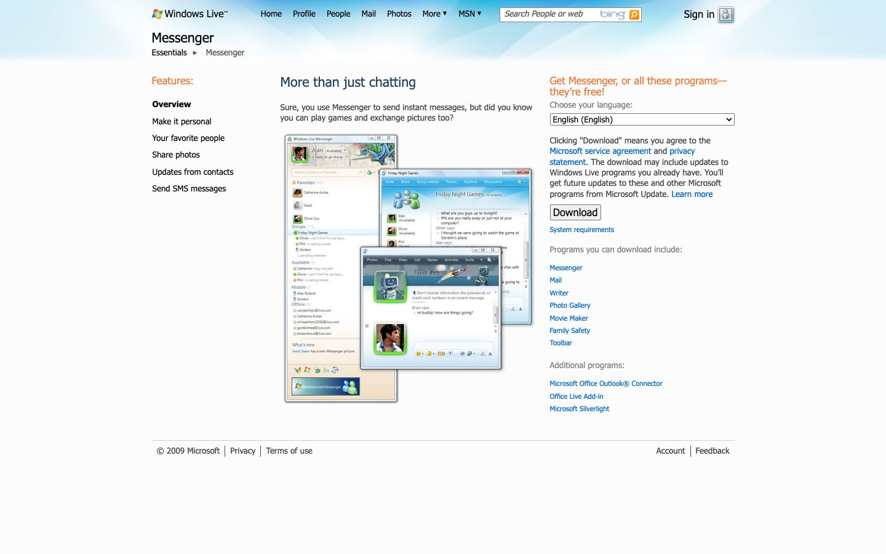

References / Website / 70
Windows Live Messenger website, 2009
The Windows Live Messenger download page as archived in November 2009.
- Source
- download.live.com/messenger (archived copy)
- Creator
- Microsoft
- Made
- 2009
- Style
- Frutiger Aero (agent-proposed, not yet reviewed by a person)
- Moods
- Friendly, light
- Evidence
- Captured from the Internet Archive with
tools/capture.mjs(headless Chrome, 1440 × 900) on 25 September 2026 and inspected. The archived page may lack some images or scripts that the live page had. - Reviewed
- Rights
- Third-party work, stored with credit for commentary. License: unverified. Rights policy
Observed
- A pale blue gradient header holds the Windows Live logo and navigation.
- The center shows overlapping screenshots of Messenger windows with blue glass title bars.
- The rest of the page is white with small orange headings and blue links.
Why it belongs
Kept as a boundary case: the product is in the style, the page mostly is not.
Measured
Machine-extracted by tools/extract-traits.js on . Full measurement.
- Type families
- Tahoma (99%), Segoe UI (1%), Arial (0%)
- Type scale ratio
- 1.15
- Median radius
- 0 px
- Mean chroma
- 0.05
- Palette
- #fcfcfc 79%
- #444444 8%
- #0066cc 5%
- #000000 4%
- #888888 2%
- #f4793a 1%
- #22436c 1%
- #efefef 0%

